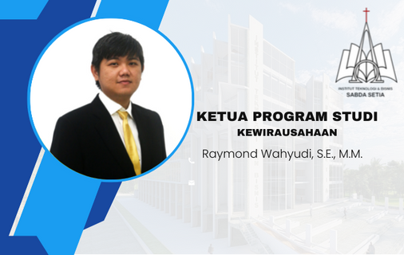

Ir. Yudi Haliman, S.H., M.H., M.M., FCBArb., FllArb.

William Sandy, Ph.D.

Beny Tamrin, S.E., M.M.

Marvello Yang, S.E., M.M., M.E., Dr.

Daniel Oktodeli Sihombing, S.T., M.Kom.
Brian Sebastian Salim, S.Kom, M.T.I.

William Wendy Ary, S.E., M.Sc.

Raymond Wahyudi, S.E., M.M.